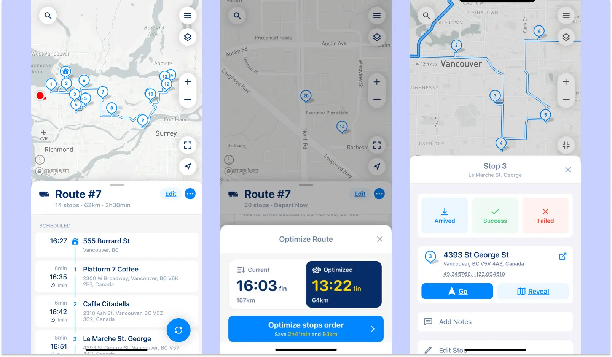
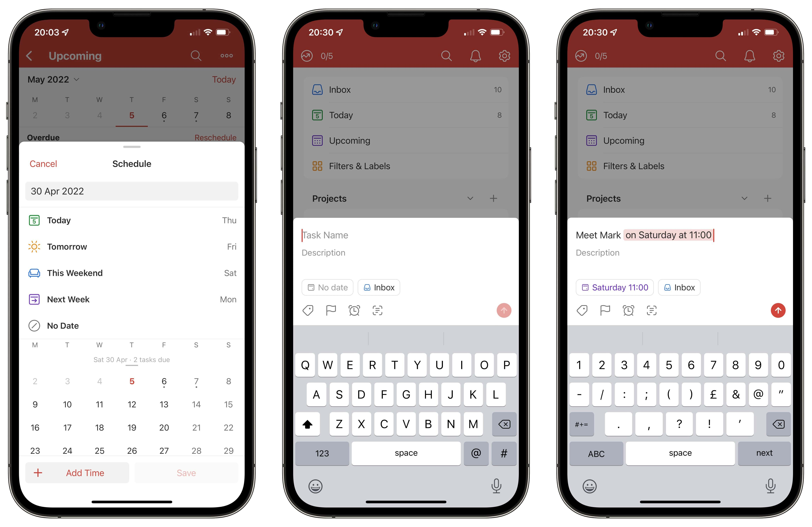
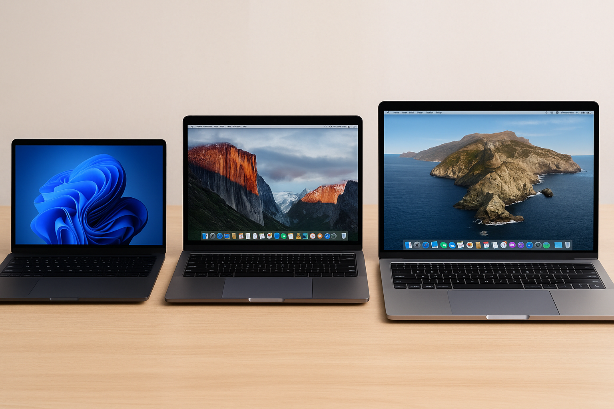
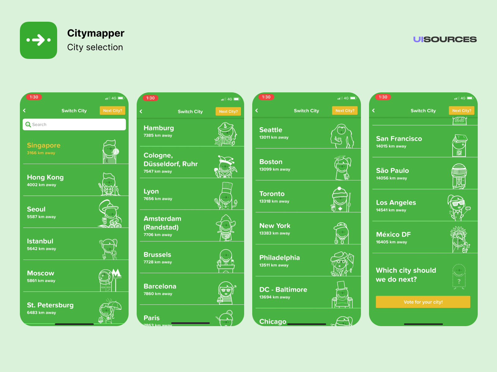

Welcome to MetroTech Digest — your friendly source for practical technology tips, quick
how-tos, and local
tech news. We break down useful tools, apps, and small-business tech so you can get things done faster,
safer, and smarter.
Welcome to MetroTech Digest
MetroTech Digest is your go-to source for **simple, practical technology tips** that make
everyday life smoother.
Whether you’re a student, freelancer, commuter, or small business owner, we help you use tech
tools that truly work —
without the jargon.
What You'll Find Here
Tech Tips: Step-by-step guides to help you get more done with your devices.
App Reviews: Honest looks at the latest productivity and lifestyle apps.
Community Features: Real stories and advice from local users and small
businesses.
Simple tools can make a big difference in your daily routine.
Commuting in a busy city can eat hours from your day, but a few smart
apps and simple habits can shave that time right back. In this piece we compare route
planners, bus/train tracker apps, and ride-sharing features that help you avoid delays
and find the fastest route — not just the shortest one.
Real savings come from combining live transit updates with personal
routines: set alerts for delays, save frequent routes, and pick multi-modal options
(ride-share + transit) when they speed things up. We also explain how to use offline
maps and low-data modes when connectivity is spotty.
Beyond travel time, use these apps to improve safety and predictability:
check live driver ratings for ride-shares, share your route with a trusted contact, and
enable return-trip reminders. Small settings changes can reduce stress and make your
daily commute less of a gamble.

Route planner app showing real-time estimated arrival times (ETA).
Budgeting for Freelancers: Tools and Habits That Work
Freelance income is flexible — which is great — but it requires deliberate money management.
Start with a simple monthly budget that separates essentials, taxes, and a “dry month” emergency
fund. Treat your freelance business like a small company: track invoices, due dates, and
outstanding
payments.
Use two bank accounts (or separate sub-accounts): one for personal expenses and one for business
income. Automate transfers for taxes and savings the moment you receive payment. We list a few
low-cost
invoicing and expense apps that work well for independent contractors and micro-businesses
Long term, set quarterly financial reviews to adjust your rates, track growth, and plan for lean
periods.
Small routines — a weekly bookkeeping hour and an invoice follow-up template — make cashflow
stress
manageable
and let you focus on work, not paperwork.
Freelancer tracking income and expenses on laptop and notebook.
Step-by-Step Tech Tutorials
How to Free Up Space on Your Phone (Without Deleting Everything)
Running low on phone storage? You don’t have to delete your favorite photos! Here are quick steps
to clean up
space the smart way:
Clear cache files: On Android, go to Settings → Storage → Cached
data.
Use cloud backup: Move photos and videos to Google Photos or iCloud.
Uninstall unused apps: Sort by “last used” to see which ones can go.
Transfer large files: Use a file-sharing app or your PC for videos and
documents.
Freeing up space helps your phone run smoother and faster.
Change your Wi-Fi password regularly.
Use WPA2 or WPA3 encryption instead of WEP.
Rename your network (SSID) so it’s not easy to identify.
Check connected devices in your router’s settings page.
Keeping your Wi-Fi secure protects your personal data.
Productivity and Tech Reviews
Todoist - Your Task Manager for Busy People
Todoist helps you organize tasks and projects efficiently across devices.
Pros: Cross-platform, easy to categorize tasks, reminders keep you on
track.
Cons: Free version has limits; recurring tasks tricky for free users; no
native calendar view without premium.
Bottom line: Perfect for students, freelancers, or anyone juggling multiple
tasks. Stick to the free version basics for simplicity.

Todoist makes task management easy across devices.
Budget Laptops 2025 - Best for Students
Best budget laptops for students who need portability and speed without breaking the bank.
Laptop A: Lightweight, 8GB RAM, good battery life.
Laptop B: 256GB SSD, decent graphics for light editing.
Laptop C: Cheapest option, reliable for writing, browsing, and video calls.
Bottom line: Great for students prioritizing value and reliability. Not ideal
for gaming or heavy editing.

Affordable laptops that balance performance and price.
Citymapper vs. Google Maps – Best Commuting App?
Comparing two popular route-planning apps for city commuters.
Citymapper: Real-time transit updates, multi-modal routes, easy to save
favorites. Limited to certain cities.
Google Maps: Global coverage, offline maps, integrates with rideshare. Can
be overwhelming with too many options.
Bottom line: Citymapper is great for daily public transit in supported cities.
Google Maps is better for universal travel needs.

Citymapper helps you navigate public transit efficiently.
Canva - Design Made Easy
Canva lets you create social media posts, presentations, and marketing materials quickly.
Pros: Large library of templates, drag-and-drop simplicity, free version is
very capable.
Cons: Some templates repetitive, limited export formats in free version.
Bottom line: Essential for freelancers, small business owners, or students
needing polished designs fast.
Canva helps anyone create professional designs quickly.